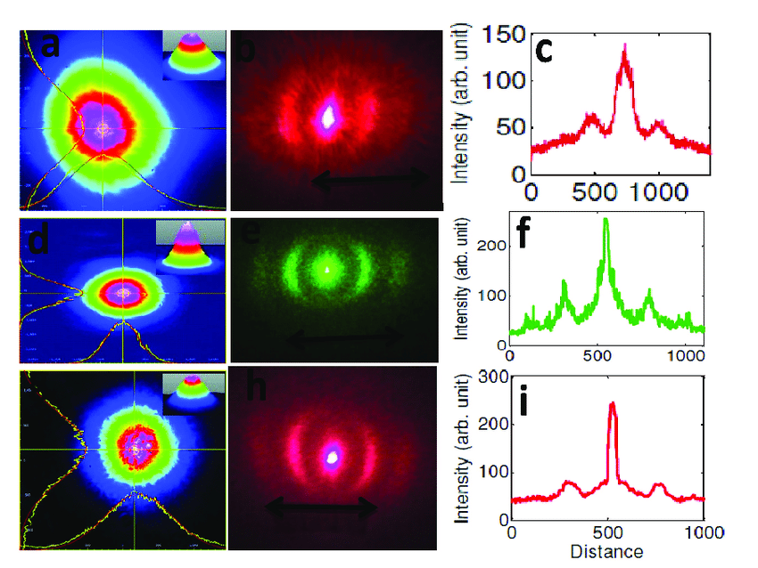

Introducere în curs
Difracţia pe o fantă dreptunghiulară.
Introducere în curs
Difracția este fenomenul prin care undele, inclusiv lumina, se îndoaie în jurul obstacolelor și prin deschideri, rezultând în modele complexe de intensitate. Difracția pe o fantă dreptunghiulară este un exemplu specific care ilustrează comportamentul undelor în prezența unor obstacole cu forme definite. Acest curs va explora principiile fundamentale ale difracției, condițiile necesare pentru a observa acest fenomen, precum și aplicațiile sale în știința modernă.
Principiile Difracției
Difracția este o consecință a naturii ondulatorii a luminii. Când o undă luminează o fantă, porțiunea de undă care trece prin fantă interferează cu celelalte porțiuni ale undei care nu au trecut. Difracția poate fi descrisă prin legea lui Huygens, care afirmă că fiecare punct al unei unde poate fi considerat o sursă de unde secundare. Această teorie ajută la explicarea cum undele se răspândesc în spațiu după ce trec printr-o fantă.
Difracția pe o Fantă Dreptunghiulară
Difracția pe o fantă dreptunghiulară se referă la comportamentul luminii atunci când aceasta trece printr-o deschidere cu lățimi și înălțimi diferite. În contrast cu o fantă circulară, o fantă dreptunghiulară produce un model de difracție care depinde de lățimea și înălțimea fantei.
Ecuația difracției:Pentru o fantă dreptunghiulară, modelul de difracție poate fi descris prin următoarele condiții:
- Lățimea fantei (𝑎):Undele care trec prin fanta se îndoaie, iar unghiul de difracție maxim se poate calcula folosind relația:
- Înălțimea fantei (𝑏):Similar, pentru direcția verticală, se folosește o ecuație similară pentru a determina unghiurile corespunzătoare:
asin(θ)=mλ
unde 𝑚 este ordinea difracției și 𝜆 este lungimea de undă a luminii.
bsin(ϕ)=nλ
unde 𝑛 este ordinea difracției pentru direcția verticală.
Observarea Difracției
Pentru a observa difracția pe o fantă dreptunghiulară, este necesar să se folosească o sursă de lumină monocromatică, cum ar fi un laser. Când lumina traversează fanta, pe un ecran situat la distanță, se formează un model de difracție caracterizat prin dungi de intensitate luminoasă alternând cu dungi întunecate. Această distribuție poate fi analizată pentru a determina caracteristicile undei.
Observarea modelului complex de difracție.
Aplicații ale Difracției
Difracția pe o fantă dreptunghiulară are aplicații importante în diverse domenii, inclusiv:
Optica:Difracția este utilizată pentru a proiecta și analiza imagini în microscopie și alte tehnici optice.
Telecomunicații:Fenomenul este important în înțelegerea propagării undelor radio și în proiectarea antenelor.
Acustică:Difracția sunetului în jurul obstacolelor este similară cu difracția luminii, având aplicații în ingineria audio și arhitectură.
Spectroscopie:Difracția este folosită pentru a analiza spectrele de lumină, contribuind la înțelegerea compoziției chimice a materialelor.